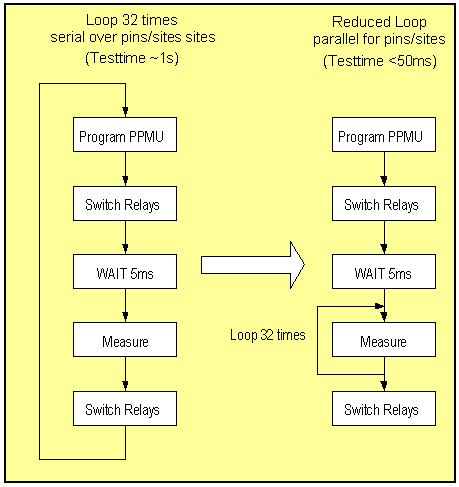
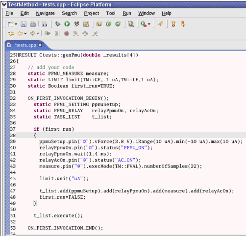

Sampling with the PPMU
When sampling with the Pin PMU try to perform as many parallel samples as possible and make the loop as small as possible. This is illustrated in the figure below.

The following figure shows an excerpt of a suitable test method API for performing 32 samples for sampling from -10µA to +10µA.

Functional changes
- Introduced before SmarTest 6.3.2